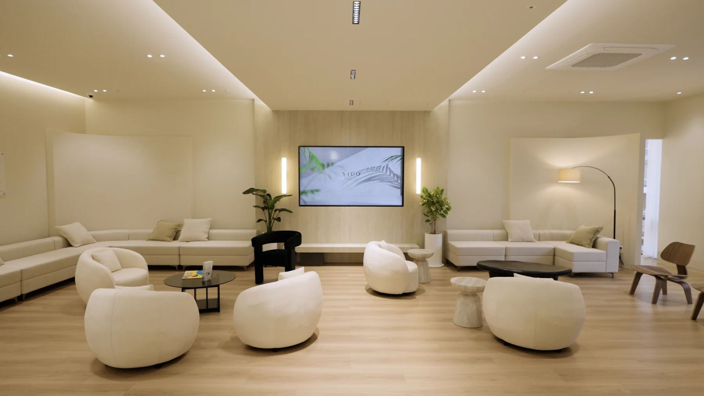

지하철
공덕역 5·6번 출구에서 도보 약 3분입니다.
위치와 진료시간을 확인하고 방문을 준비하세요. 월요일과 목요일은 저녁 8시 30분까지 진료합니다.

진료시간 확인 중
| 월 · 목야간진료 | 09:30 – 20:30 |
|---|---|
| 화 · 수 · 금 | 09:30 – 18:30 |
| 토요일점심시간 없음 | 09:30 – 14:30 |
| 평일 점심 | 12:30 – 14:00 |
| 일요일 · 공휴일 | 휴진 |
한국 표준시(KST) 기준 · 원장별 진료일은 예약할 때 확인해 주세요.
출발 위치와 보행 경로에 따라 시간은 달라질 수 있습니다.
공덕역 5·6번 출구에서 도보 약 3분입니다.
신공덕 아이파크 지하주차장 2시간 무료. 주차 등록 방법과 초과 요금은 방문 전 병원에 확인해 주세요.
전화 +82-2-706-2080. 진료시간은 한국 표준시(UTC+9) 기준입니다.
서울이도치과의 실제 소재지는 신공덕동입니다. 도로명 주소는 만리재로 24, 2층이며 지번 주소는 신공덕동 178입니다.
목적지는 신공덕동의 서울이도치과로 설정해 주세요. ‘공덕’ 지역명만 검색하기보다 만리재로 24를 입력하면 목적지 확인에 도움이 됩니다.
출발 건물이나 주소를 기준으로 경로를 확인해 주세요. 마포역과 공덕역은 서로 다른 역이며, 병원은 공덕역 인근 신공덕동에 있습니다.
지도에 현재 위치와 목적지 ‘서울이도치과의원’을 입력해 도보·버스·지하철 경로를 비교해 주세요. 아현역과 공덕역은 서로 다른 역입니다.
위 동네는 출발 지역이며, 해당 동에 별도 지점이 있다는 뜻은 아닙니다.
정리해 오시면 상담 시간을 알차게 쓸 수 있습니다.
서울특별시 마포구 만리재로 24, 2층에 있습니다. 방문 전 전화 또는 네이버 예약을 통해 진료 일정을 확인해 주세요.
불편한 부위와 증상, 복용 중인 약, 알레르기, 기존 치료 경험을 정리해 주세요. 치료에 대한 걱정이나 질문도 의료진에게 알려주세요.
네이버 예약 버튼으로 병원의 예약 페이지를 열거나 02-706-2080으로 전화하실 수 있습니다. 실제 예약 확정 여부는 예약 서비스 또는 병원의 안내를 확인해 주세요.
공개 영상에서 영어는 고성민·원소윤, 일본어는 고성민, 중국어는 박지현 원장이 안내합니다. 예약할 때 원하는 언어, 담당 의료진의 진료일과 상담 범위를 확인해 주세요.
전화는 +82-2-706-2080입니다. 진료시간은 한국 표준시(KST, UTC+9) 기준입니다. 네이버 예약도 이용할 수 있으며 로그인이나 해외 이용 가능 여부는 해당 서비스에서 확인해 주세요.
현재 상태를 확인해야 계획과 비용을 설명할 수 있습니다. 상담에서는 필요한 검사, 가능한 선택지, 예상 방문 횟수와 관리 방법을 함께 물어보세요.
의료진 정보는 서울이도치과의원 공식 홈페이지를 바탕으로 정리했습니다. 구강 건강 안내에는 해당 내용을 확인할 수 있는 공공기관 원문을 함께 표시합니다.